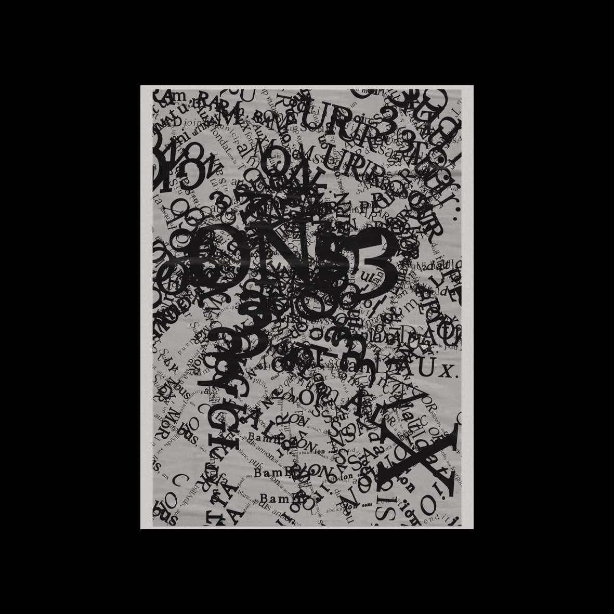
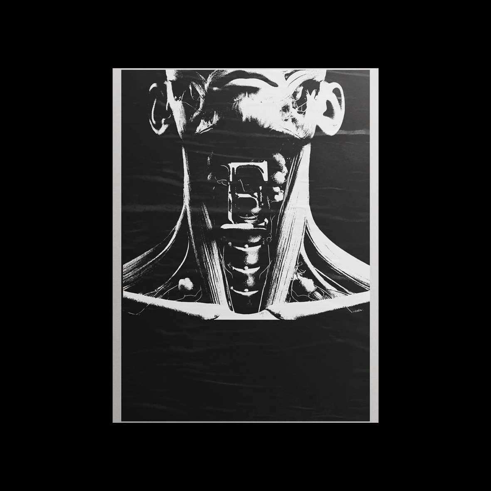
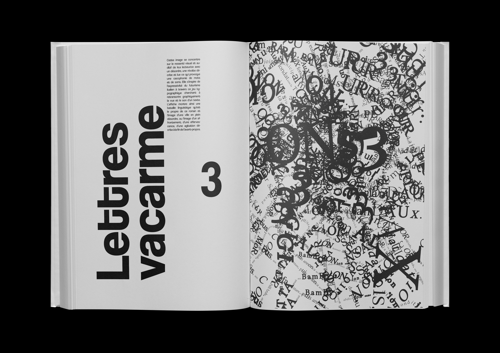
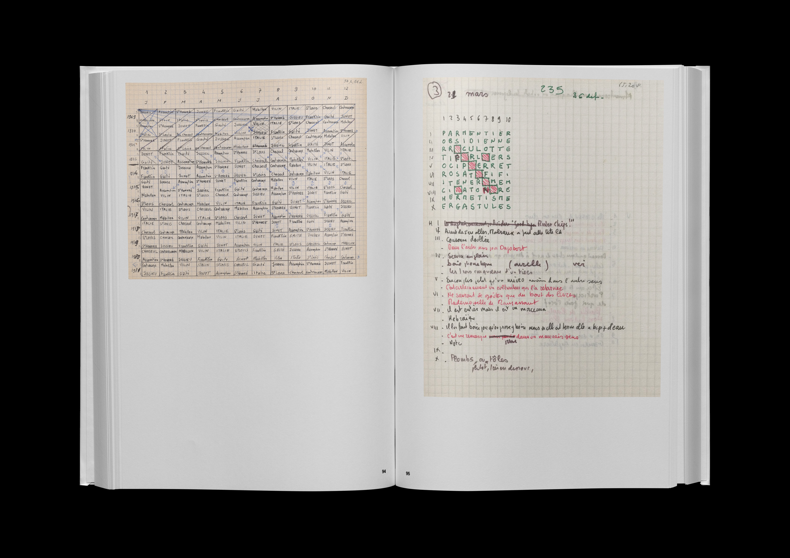
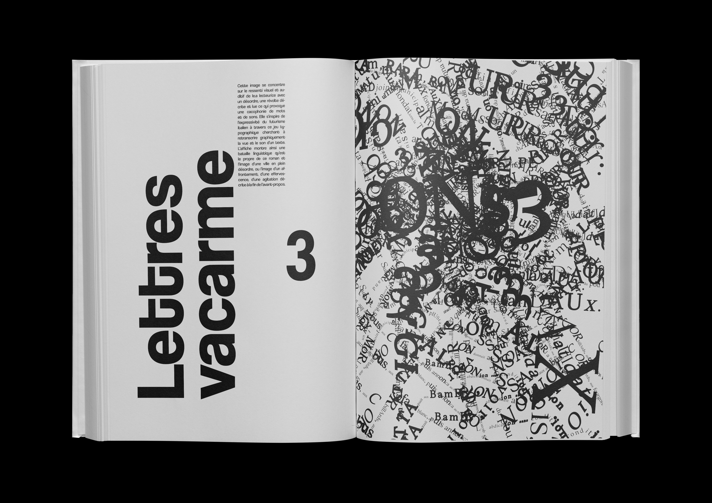
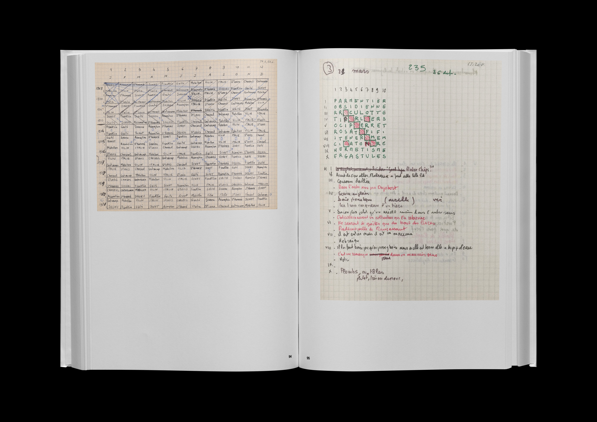

4 affiches
60 x 80 cm
Bras armés
Cette image se concentre sur la révolte armée décrite par Perec. Elle convoque l’esthétique constructiviste russe pendant laquelle l’art était un outil de révolution par la composition géométrique et les couleurs rouge et noire. L’affiche montre ainsi une masse de personnes avec des mains-fourches reprenant le fait que Perec décrit une foule en révolte et violente plutôt que des individus précis. On ressent ainsi le mouvement d’émeute et la colère décrite à la fin de l’avant-propos.

Les murs ont des yeux
Cette image se concentre sur la fin du texte, sur la méfiance des un.e.s envers les autres et la psychose qui en découle. Elle convoque le roman 1984 de Georges Orwell avec la figure de l'œil et la société panoptique de Michel Foucault dans laquelle tout le monde s’observe et se sent observé d’où l’accumulation de yeux terrifiants qui regardent dans tous les sens. On ressent ainsi la peur, la haine et l’obsession que décrit Perec à la fin de l’avant-propos.

Lettres-vacarme
Cette image se concentre sur le ressenti visuel et auditif de le.a lecteurice avec un désordre, une révolte décrite et lue, ce qui provoque une cacophonie de mots et de sons. Elle s’inspire de l’expressivité du futurisme italien à travers ce jeu typographique cherchant à retranscrire graphiquement la vue et le son d’un texte. L’affiche montre ainsi une bataille linguistique qu’est le propre de ce roman et l’image d’une ville en plein désordre, ou l’image d’un affrontement, d’une effervescence, d’une agitation décrite à la fin de l’avant-propos.
E-gorgé
Cette image se concentre sur la violence de l’acte extrême de l’écriture choisi par Perec. Elle reprend l’expression ‘avoir un chat dans la gorge’ qui signifie éprouver une difficulté à parler (ici de par la contrainte, caractéristique de Perec, membre du mouvement OulipO). L’affiche montre ainsi un cou sans peau, à travers une esthétique gore et contrastée, avec la lettre E à l’intérieur comme pour imaginer l’auteur pendant la rédaction de ce roman.
Édition
25 x 35 cm
110 pages
Quand Perec décide d’écrire un roman sans la lettre “e”, il se place dans des conditions extrêmes, voire en danger vis-à-vis de la langue française. Moi, future designer graphique, en utilisant l’Intelligence Artificielle, je me mets également en danger vis-à-vis de ma passion. Cependant, si Perec réussit à faire jaillir une forme unique avec de nouvelles contraintes, s’il parvient à révolutionner une entité si ancienne qu’est le roman avec de nouveaux outils, alors moi aussi je peux essayer.
J’ai longtemps mis de côté l’existence et la puissance de l’IA, pensant que j’allais disparaître sitôt que je l’utilisais. Or, ici, mettre en image l’avant-propos de La Disparition, à l’aide de l’IA, m’a amené vers des idées et processus de création neufs et innovants. Finalement, c’est moi qui tape chaque lettre sur mon clavier pour obtenir ce que je souhaite.
Il me semblait nécessaire, pour moi, de créer ce recueil de ressources pour montrer − et sûrement pour me prouver à moi-même − l’ensemble des recherches qui m’ont poussée à demander certaines choses à l’IA.


 


